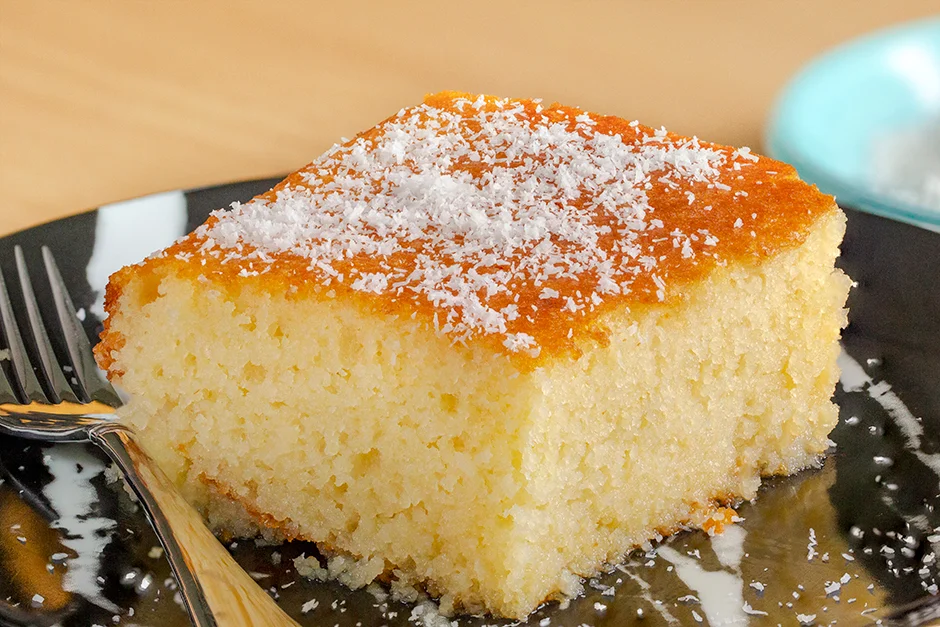

REVANİ
Kabardıkça Kabarır, Şerbetini Tam Çeker: Revani Tarifi

Bu tarif Yemek.com şefi tarafından üretilmiştir
KAÇ KİŞİLİK: 8 dilim HAZIRLAMA SÜRESİ:35 dakika PİŞİRME SÜRESİ:30 dakika
Revani için malzemeler:
- 3 adet yumurta
- 1 çay bardağı toz şeker
- 1 çay bardağı ayçiçek yağı
- 1 su bardağı irmik
- 1,5 su bardağı un
- 1 su bardağı yoğurt
- 1 paket kabartma tozu
- 1 paket vanilin
Şerbeti için:
- 2,5 su bardağı
toz şeker
- 3
su bardağı
su
- 1/2
adet
limon suyu
Servisi için:
- 2
yemek kaşığı rendelenmiş Hindistan cevizi
Revani Nasıl Yapılır?
Tatlının şerbetini hazırlamak için; 3 su bardağı su ve 2,5 su bardağı toz şekeri bir tencereye aktarın.
Kısık ateşte yaklaşık 30 dakika kadar kaynattıktan sonra limon suyunu ekleyin ve ılınması için ocaktan alın.
3 yumurta bir kabın içerisine aktarın.
Üzerine 1 çay bardağı toz şekeri bir mikser yardımıyla toz şeker tamamen eriyene kadar karıştırın
1 çay bardağı ayçiçek yağı, 1 su bardağı yoğurt ve 1 su bardağı irmiği de ekledikten sonra tekrar karıştırın.
Son olarak 1,5 su bardağı un, 1 paket kabartma tozu ve 1 paket vanilini de karışıma ekledikten sonra çırpma işlemini sürdürün.
Yağlanmış fırına dayanıklı kalıbın içerisine hazırladığınız revani karışımını dökün.
Önceden ısıtılmış 180 derece fırında 25-30 dakika kadar pişirin. Fırından çıkardığınız revaninin ilk sıcaklığı geçtikten sonra oda sıcaklığında soğumuş şerbeti üzerine dökün ve şerbeti çekene kadar yaklaşık 1-2 saat bekleyin.
Ardından bıçak yardımıyla revaniyi dilimleyin.
Dilimlediğiniz ılık tatlıya rendelenmiş Hindistan cevizi serpiştirip servis edin. Afiyet olsun!